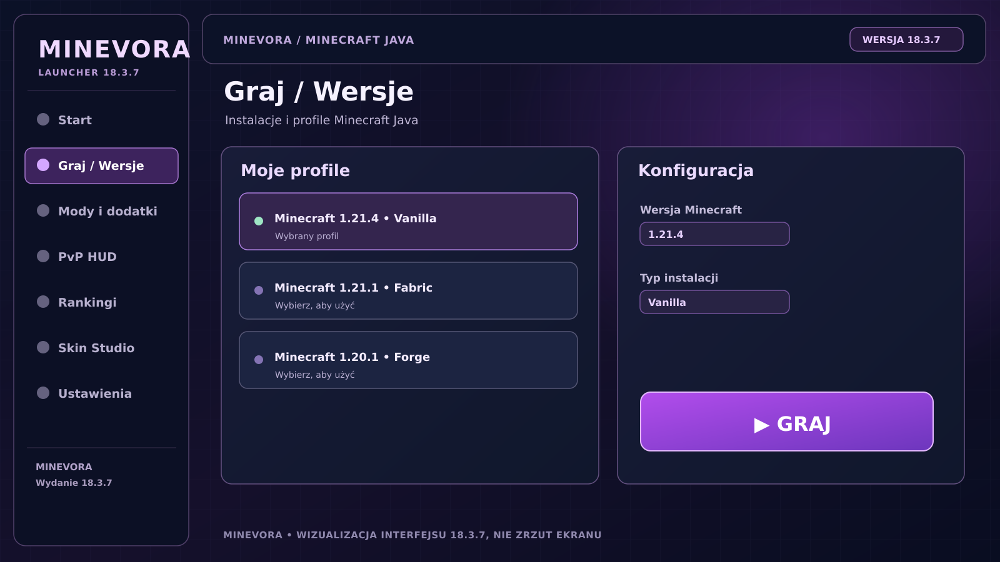
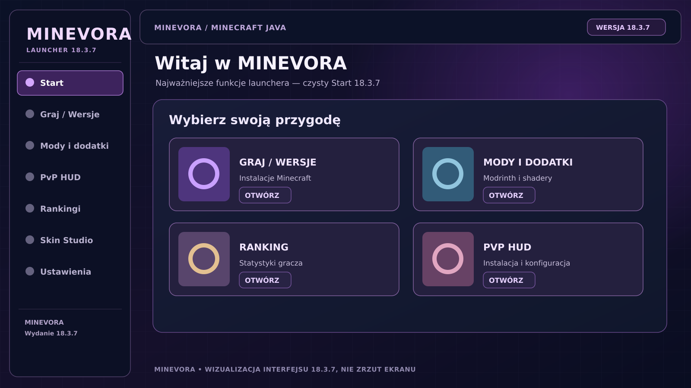
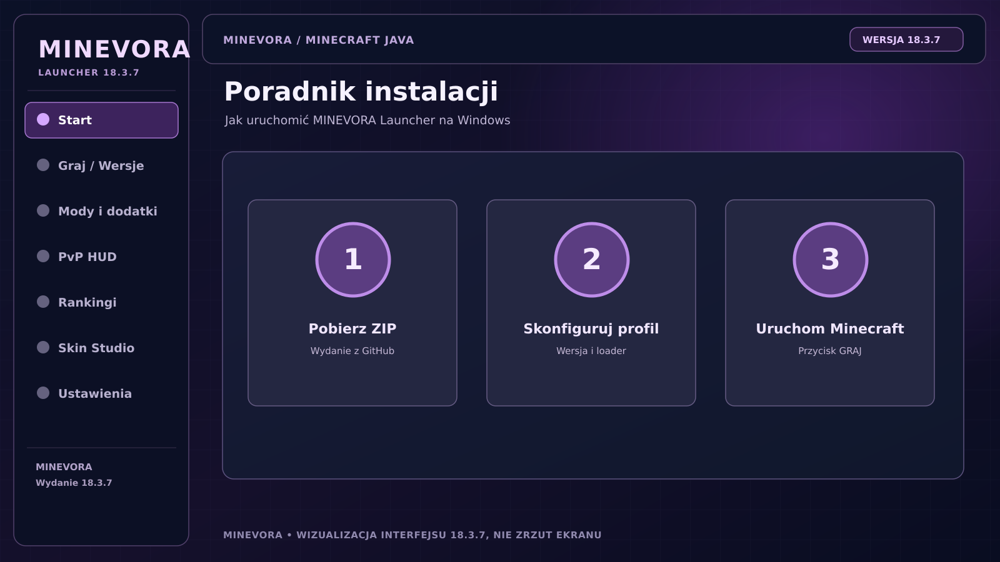
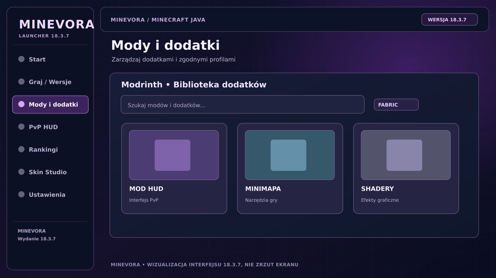

Profile i wersje
Wybieraj swój sposób gry.
Obsługuj zainstalowane profile Minecraft Java i przełączaj się między przygotowanymi konfiguracjami. Zależność loadera od wersji gry nadal ma znaczenie.
Profile Minecraft Java, mody i własny styl gry w jednym launcherze. Poznaj MINEVORA — aplikację rozwijaną z myślą o wygodnym starcie w świat Minecrafta.

Nowy interfejs MINEVORA porządkuje to, z czego naprawdę korzystasz — profile Minecrafta, dodatki i szybki dostęp do gry. Pozostałe funkcje są dostępne w aplikacji Windows.

Obsługuj zainstalowane profile Minecraft Java i przełączaj się między przygotowanymi konfiguracjami. Zależność loadera od wersji gry nadal ma znaczenie.

Pobieranie, konfiguracja profilu i uruchomienie gry w przejrzystym układzie. Instrukcja instalacji jest dostępna w osobnym poradniku.
Najważniejsze obszary projektu bez zbędnych zakładek. Wybierz kartę, aby obejrzeć ilustrację funkcji w tym samym stylu interfejsu.
Przeglądaj koncepcję katalogu dodatków i zarządzania modyfikacjami. Przy instalacji sprawdzaj zgodność moda z wersją Minecrafta oraz wybranym loaderem.
Otwórz w launcherze →
Trzy etapy rozpoczęcia korzystania z MINEVORA. W razie błędu skorzystaj z poradnika zamiast wyłączać zabezpieczenia systemu.
Otwórz publiczne wydanie MINEVORA na GitHub i pobierz archiwum ZIP przygotowane dla Windows.
Po sprawdzeniu plików skonfiguruj wersję Minecrafta i zgodny loader wewnątrz launchera.
Gra uruchamia się w aplikacji Windows. Do pełnej wersji Java Edition wymagane jest uprawnienie do gry na koncie Microsoft.
Publiczne wydanie MINEVORA Launcher 18.3.7 dla Windows. Pobierzesz je z repozytorium GitHub jako archiwum ZIP. Nie przedstawiamy go jako instalatora EXE ani wydania na inne systemy.
Archiwum ZIP · Wersja 18.3.7 · Sprawdź SHA-256
MINEVORA jest niezależnym launcherem. Nie wyłączaj Windows Defendera ani Smart App Control podczas instalacji niezweryfikowanych plików.